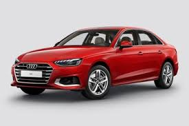

1. История
Audi е германски производител на а втомобили, основан през 1909 година.През 1932 година Audi се обединява с
Horch, DKW и Wanderer, като създават компанията Auto Union. Това обединение е символизирано от логото с
четирите преплетени кръга. Днес Audi е част от Volkswagen Group

2. Лого
Четирите кръга символизират обединението на четири автомобилни компании.Днес четирите кръга са един от
най-разпознаваемите автомобилни символи в света. Те олицетворяват качество, иновации, надеждност и
дългогодишната история на марката Audi.
.jpg)
3. Популярни модели
- Audi A3
- Audi A4
- Audi A6
- Audi Q5
- Audi R8

4. Технологии
Audi е известна с внедряването на съвременни технологии, които подобряват безопасността, комфорта и
управлението на автомобилите. Една от най-популярните технологии е системата quattro – постоянно задвижване
на четирите колела, което осигурява по-добро сцепление и стабилност при различни пътни условия.
.jpg)
5.Електрически автомобили
Audi развива серията e-tron, която включва изцяло електрически автомобили. Те се отличават с модерен дизайн,
висока производителност и ниски вредни емисии.
.jpg)
6. Интересни факти
Audi е една от първите автомобилни компании, които въвеждат много нови технологии в серийното производство.
Марката е известна с модерния си дизайн, високото качество и иновациите си. Автомобилите Audi се продават в
повече от 100 държави по света
.jpg)